Lecture 3 Metropolis Monte Carlo
3.1 Introduction
In the previous lecture, we considered the problem of effective sampling of chemical systems. Uniform sampling predominantly generates high-energy configurations with negligible Boltzmann weights, while the low-energy states that contribute the most to thermodynamic averages occupy only a tiny fraction of configuration space. For even modestly sized molecules, most possible configurations have energies so high that they effectively make zero contribution to ensemble averages.
As a first step to addressing this problem, we considered the approach of generating a sequence of samples, where each new configuration is obtained from the previous one by making a relatively small, local change. The idea is that if we start in a high-probability region of configuration space, making small local moves will tend to keep us in other high-probability regions, avoiding the unphysical structures that dominate most of configuration space.
This sequential sampling approach is mathematically formalised through Markov chains, which provide a framework for generating stochastic paths through configuration space. A crucial property of Markov chains is that, when properly constructed, they eventually reach a stationary distribution—the frequency with which they visit different states stabilises to a consistent pattern. If we can design Markov chains with the Boltzmann distribution as their stationary distribution, our simulations will naturally sample molecular configurations according to their physical probabilities, allowing us to compute thermodynamic averages through simple averaging. The focus of this lecture is how to construct such a Markov chain.
3.2 Detailed Balance
In Lecture 2, we built a weather model as a Markov chain: given a set of transition probabilities (the chances of going from sunny to rainy, rainy to cloudy, and so on), we discovered what stationary distribution those probabilities produce. Let us examine this relationship more carefully, starting from a condition that any equilibrium distribution must satisfy.
3.2.1 Global balance
At equilibrium, the probability of being in each state does not change over time. If this were not the case, the distribution would still be evolving and the system would not be at equilibrium. For the distribution to remain constant, the total probability flow into each state must equal the total flow out—a condition called “global balance”:
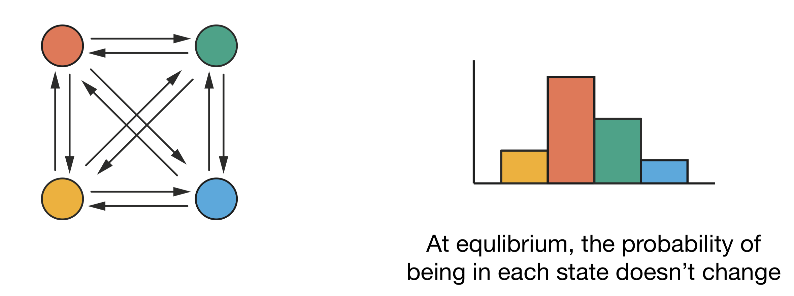
Figure 3.1: Global balance: even though transitions occur between all pairs of states (left), at equilibrium the probability of being in each state remains constant (right). For each state, the total probability flow in equals the total probability flow out.
Applied to the 2-state weather model from Lecture 2, global balance gives one equation:
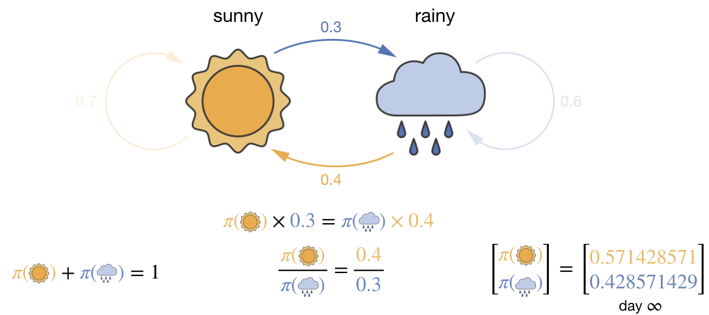
Figure 3.2: Global balance for the 2-state weather model from Lecture 2. The flow balance condition \(\pi(\text{sunny}) \times 0.3 = \pi(\text{rainy}) \times 0.4\), together with the normalisation constraint, uniquely determines the stationary distribution.
There is only one pair of states, so the flow balance condition is: the probability flow from sunny to rainy must equal the flow from rainy to sunny:
\[\pi_\text{sunny} \times 0.3 = \pi_\text{rainy} \times 0.4\]
Combined with the normalisation constraint \(\pi_\text{sunny} + \pi_\text{rainy} = 1\), we have two equations in two unknowns. Solving gives \(\pi_\text{sunny} = 4/7\) and \(\pi_\text{rainy} = 3/7\)—exactly the stationary distribution we found in Lecture 2. The transition probabilities between the two states define the equilibrium distribution.
We can extend this to a better weather model with three states—sunny, rainy, and cloudy. Now global balance gives one equation per state:
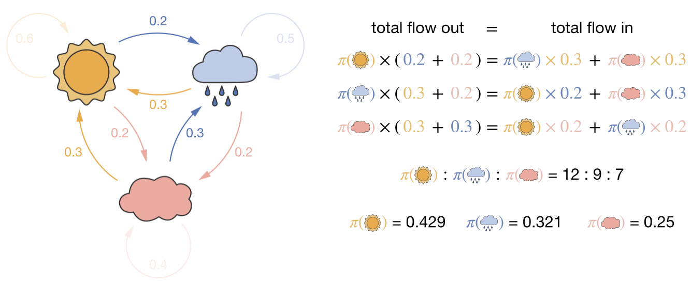
Figure 3.3: Global balance for a 3-state weather model. For each state, the total probability flow out (left-hand side) must equal the total probability flow in (right-hand side). These three equations, together with the requirement that probabilities sum to one, determine the stationary distribution.
One of these three global balance equations is redundant (it is a linear combination of the other two). Adding the normalisation constraint \(\pi_\text{sunny} + \pi_\text{rainy} + \pi_\text{cloudy} = 1\) gives three independent equations in three unknowns. Solving this set of simultaneous equations determines the stationary distribution.
In both the 2-state and 3-state weather models, the transition probabilities between states define the equilibrium probability distribution.
3.2.2 The inverse problem
But we want to solve the inverse problem: we know the form of the stationary distribution we want—the Boltzmann distribution, \(\pi_i \propto \exp(-U_i/k_\mathrm{B}T)\)—and we need to find transition probabilities that will produce it.
In the weather models, the inverse problem was straightforward: we knew the numerical value of each \(\pi_i\) and could plug them directly into the balance equations. For a chemical system, the individual Boltzmann probabilities \(\pi_i = \exp(-U_i/k_\mathrm{B}T)/Z\) are unknown because we cannot calculate the partition function \(Z\).
This would not matter if we could work purely with ratios of probabilities, since \(Z\) cancels from \(\pi_j/\pi_i\). For the 2-state weather model, the balance equation involves only one pair of states and can be rearranged into exactly such a ratio: \(P(\text{sunny} \to \text{rainy})/P(\text{rainy} \to \text{sunny}) = \pi_\text{rainy}/\pi_\text{sunny}\). But for three or more states, each global balance equation involves all states through coupled sums—the equation for sunny includes transitions to and from rainy and cloudy. These sums involve the individual \(\pi_i\), not clean ratios, so \(Z\) does not cancel. We need a more tractable approach.
3.2.3 Detailed balance
Instead of requiring that probability flows balance globally (the total in equals the total out for each state), we can impose a stronger condition: that probability flows balance for each pair of states. This condition, called “detailed balance,” requires that for each pair of states \(i\) and \(j\), the probability flow from \(i\) to \(j\) exactly equals the flow from \(j\) to \(i\):
\[ \pi_i \times P(i \to j) = \pi_j \times P(j \to i) \]
where \(\pi_i\) is the equilibrium probability of state \(i\) and \(P(i \to j)\) is the transition probability from state \(i\) to state \(j\). If detailed balance holds for every pair, then global balance is automatically satisfied.4
The advantage for the inverse problem is that detailed balance decomposes the global constraint into independent pairwise constraints. We can rearrange the detailed balance equation:
\[ \frac{P(i \to j)}{P(j \to i)} = \frac{\pi_j}{\pi_i} \]
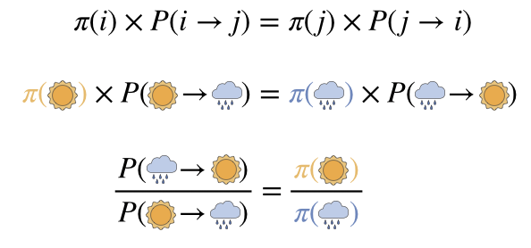
Figure 3.4: Rearranging the detailed balance equation. Starting from the pairwise balance condition (top), we can express the ratio of transition probabilities in terms of the ratio of stationary probabilities (bottom). For chemical systems, these stationary probabilities are the Boltzmann weights.
Each pair of states gives one independent constraint on the ratio of transition probabilities—we only ever need to consider two states at a time. For the Boltzmann distribution, \(\pi_i \propto \exp(-U_i/k_\mathrm{B}T)\), so:
\[ \frac{P(i \to j)}{P(j \to i)} = \frac{\exp(-U_j/k_\mathrm{B}T)}{\exp(-U_i/k_\mathrm{B}T)} = \exp(-(U_j-U_i)/k_\mathrm{B}T) \]
The ratio of transition probabilities depends only on the energy difference between the two states, not on the absolute energies or the partition function. We can sample from the Boltzmann distribution using only local decisions between pairs of states, without ever calculating the partition function \(Z\).
Note that this equation does not fully specify the transition probabilities; it only constrains their ratio. This freedom allows us to choose transition probabilities that are computationally convenient, as long as they satisfy the ratio constraint for every pair of states.
3.3 The Metropolis Algorithm
In 1953, Nicholas Metropolis and colleagues published an algorithm that satisfies detailed balance. Their approach separates the transition probability into two parts:
\[ P(i \to j) = \alpha(i \to j) \times \text{acc}(i \to j) \]
Here \(\alpha(i \to j)\) is the proposal probability (how likely we are to suggest a move from \(i\) to \(j\)) and \(\text{acc}(i \to j)\) is the acceptance probability (once proposed, how likely we are to accept it).
The simplest approach is to use symmetric proposal probabilities where \(\alpha(i \to j) = \alpha(j \to i)\). This might involve, for example, randomly displacing an atom in any direction with equal probability. With symmetric proposals, the \(\alpha\) terms cancel from the detailed balance ratio, and we only need:
\[ \frac{\text{acc}(i \to j)}{\text{acc}(j \to i)} = \exp(-(U_j-U_i)/k_\mathrm{B}T) \]
This ratio does not uniquely determine the individual acceptance probabilities. The Metropolis solution is to consider two cases:
- If the proposed move lowers the energy (\(U_j \leq U_i\)), always accept: \(\text{acc}(i \to j) = 1\).
- If the proposed move raises the energy (\(U_j > U_i\)), accept with probability \(\text{acc}(i \to j) = \exp(-(U_j - U_i)/k_\mathrm{B}T)\).
We can check this satisfies detailed balance. For the case \(U_j > U_i\) (an uphill move from \(i\) to \(j\)): \(\text{acc}(i \to j) = \exp(-(U_j - U_i)/k_\mathrm{B}T)\) and \(\text{acc}(j \to i) = 1\) (since the reverse move is downhill). The ratio is \(\exp(-(U_j - U_i)/k_\mathrm{B}T)\), which matches the detailed balance requirement. The case \(U_i > U_j\) gives the same result by symmetry.
These two cases are commonly written as a single expression using the \(\min\) function:
\[ \text{acc}(i \to j) = \min(1, \exp(-(U_j-U_i)/k_\mathrm{B}T)) \]
When \(U_j \leq U_i\), the exponential is \(\geq 1\), so the minimum is 1 (always accept). When \(U_j > U_i\), the exponential is \(< 1\), so it becomes the acceptance probability.
3.4 The Metropolis Monte Carlo Algorithm in Practice
The complete Metropolis Monte Carlo algorithm is:
Initialisation: Begin with an initial configuration of your system. This might be a random arrangement, a regular lattice, or a known low-energy structure.
Energy calculation: Calculate the energy of this initial configuration \(U(\mathbf{r})\) using an appropriate potential energy function for your system.
Move proposal: Propose a move to a new configuration \(\mathbf{r}'\). The nature of this move depends on your system—it might involve displacing an atom, rotating a dihedral angle, flipping a spin, or other modifications appropriate to the degrees of freedom being studied.
Energy evaluation: Calculate the energy of the proposed configuration \(U(\mathbf{r}')\).
Energy difference: Compute the energy change that would result from this move: \(\Delta U = U(\mathbf{r}') - U(\mathbf{r})\).
Acceptance decision: Apply the Metropolis criterion to decide whether to accept the proposed move:
- If \(\Delta U \leq 0\) (energy decreases or remains the same), accept the move.
- If \(\Delta U > 0\) (energy increases), generate a random number \(\xi\) uniformly between 0 and 1.
- If \(\xi < \exp(-\Delta U/k_\mathrm{B}T)\), accept the move.
- Otherwise, reject the move.
This use of a random number implements probabilistic acceptance: comparing \(\xi\) to \(\exp(-\Delta U/k_\mathrm{B}T)\) means we accept the move with exactly that probability.
Configuration update: If the move is accepted, update your current configuration to \(\mathbf{r}'\). If rejected, retain the original configuration \(\mathbf{r}\).
Property calculation: Calculate any properties of interest for the current configuration (even if the proposed move was not accepted).
Iteration: Return to step 3 and repeat the process many times to explore configuration space thoroughly.
Analysis: After generating a sufficient number of configurations, compute averages of your calculated properties to estimate thermodynamic observables.
3.5 Why We Record Rejected Moves
When a proposed move is rejected, we include the current state in our statistics again. This is essential for correct sampling: our goal is to generate configurations with frequencies proportional to their Boltzmann weights. By counting a low-energy state multiple times (when moves away from it are rejected), lower-energy states appear more frequently in our sample, correctly reflecting their higher Boltzmann probabilities.
3.5.1 Two-State System Example
Consider a simple system with just two possible states: state \(1\) with energy \(E_1\) and state \(2\) with energy \(E_2\), where \(E_2 > E_1\). According to the Boltzmann distribution, the ratio of probabilities should be:
\[\frac{P(2)}{P(1)} = \exp\left(-\frac{E_2 - E_1}{k_\mathrm{B}T}\right)\]
This ratio varies with temperature—at high temperatures it approaches \(1\), and at low temperatures it approaches \(0\).
For concreteness, set \(E_2 - E_1 = k_\mathrm{B}T\), so \(P(2)/P(1) = e^{-1} \approx 0.37\)—state \(1\) should appear about 73% of the time. Starting in state \(1\), the only possible move is to state \(2\), which requires an energy increase of \(k_\mathrm{B}T\). The Metropolis acceptance probability is \(\exp(-1) \approx 0.37\), so about 63% of the time this move is rejected. When we correctly record state \(1\) again after each rejection, state \(1\) accumulates the extra counts it needs to reflect its higher Boltzmann weight.
If instead we only recorded states after accepted moves, we would always alternate—every accepted move from state \(1\) goes to state \(2\), every accepted move from state \(2\) goes to state \(1\)—giving equal counts of both states regardless of temperature. This contradicts the Boltzmann distribution, which requires state \(1\) to be increasingly favoured as temperature decreases.
3.6 Example: 4-Spin Ising Model
The Ising model is a simplified model of a magnet. Each atom is represented by a “spin” that can point either up (\(+1\)) or down (\(-1\)), and neighbouring spins interact: parallel neighbours lower the energy, antiparallel neighbours raise it. Despite its simplicity, the Ising model captures the essential physics of magnetic phase transitions, and it provides an ideal test case for the Metropolis algorithm because the configuration space is discrete and small enough to enumerate exactly.
We will use a one-dimensional Ising model with four spins arranged in a ring, as illustrated in Figure 3.5. The ring geometry means that spin 4 is a neighbour of spin 1 (periodic boundary conditions), so every spin has exactly two neighbours.
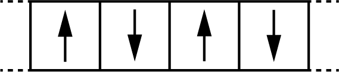
Figure 3.5: A 4-spin Ising model with periodic boundary conditions. Each spin can point up (+1) or down (−1) and interacts with its two neighbouring spins. Spin 4 wraps around to neighbour spin 1.
The energy of this system is:
\[ H(\sigma) = -\sum_{\langle i,j \rangle} J \sigma_i \sigma_j \]
where the sum runs over neighbouring pairs, \(\sigma_i = \pm 1\) is the spin at site \(i\), and \(J\) is the interaction strength. For ferromagnetic coupling (\(J > 0\)), parallel spins (\(\sigma_i \sigma_j = +1\)) contribute \(-J\) each, lowering the energy, while antiparallel spins (\(\sigma_i \sigma_j = -1\)) contribute \(+J\), raising it.
With four spins, there are \(2^4 = 16\) possible configurations:
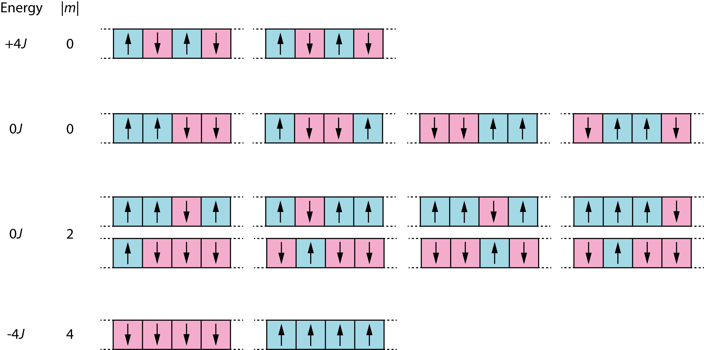
Figure 3.6: All 16 possible spin configurations for a 4-spin Ising model, showing energy values and magnetisation values.
These 16 configurations fall into three energy levels. The total magnetisation \(M = \sum_i \sigma_i\) is the sum of all spins, and \(|M|\) measures how strongly the system is magnetised regardless of direction. The ground state (\(E = -4J\)) has all spins aligned (all up or all down), giving two configurations with \(|M| = 4\). The highest energy (\(E = +4J\)) has alternating spins (up-down-up-down), giving two configurations with \(|M| = 0\). The remaining twelve configurations have mixed alignments and intermediate energy (\(E = 0\)).
A Metropolis Monte Carlo simulation of this system works as follows:
- Start with a random arrangement of the four spins.
- At each step, randomly select one spin and propose flipping it.
- Calculate the energy change \(\Delta E\) that would result from this flip.
- Apply the Metropolis criterion: accept the flip if \(\Delta E \leq 0\); otherwise accept with probability \(\exp(-\Delta E/k_\mathrm{B}T)\).
- Record the new configuration (or repeat the current one if the move was rejected).
To see what step 3 involves, suppose the system is in the ground state (all spins up, \(E = -4J\)) and we propose flipping spin 2. Before the flip, spin 2 is parallel to both its neighbours, so those two pairs each contribute \(-J\) to the energy (a total of \(-2J\) from spin 2’s interactions). After flipping, spin 2 is antiparallel to both neighbours, so each pair now contributes \(+J\) (a total of \(+2J\)). The energy change is:
\[\Delta E = (+2J) - (-2J) = +4J\]
This is an uphill move. At \(k_\mathrm{B}T = 2J\), the Metropolis acceptance probability is \(\exp(-4J/2J) = \exp(-2) \approx 0.14\), so roughly one in seven such attempts would be accepted.
Figure 3.7 illustrates a portion of a Monte Carlo trajectory for this system. Each row shows: the current configuration, which spin is proposed for flipping, the resulting \(\Delta E\), and whether the move is accepted or rejected. For downhill moves (\(\Delta E \leq 0\)), acceptance is automatic. For uphill moves (\(\Delta E > 0\)), the table shows both the acceptance probability and the random number \(\xi\) that was generated: the move is accepted only if \(\xi < \exp(-\Delta E/k_\mathrm{B}T)\).
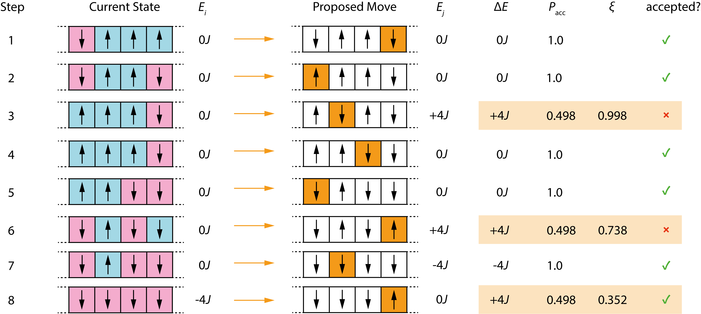
Figure 3.7: A portion of a Monte Carlo trajectory for the 4-spin Ising model. Each row shows the current configuration, the proposed spin flip, the energy change, the acceptance probability, and (for uphill moves) the random number used to decide acceptance.
After an initial equilibration period, the Metropolis algorithm samples each configuration with a frequency that matches its Boltzmann probability. We can therefore calculate thermodynamic properties by averaging over our collected samples, rather than by direct enumeration. Compare the two approaches:
Direct enumeration (sum over all states):
\[ \langle A \rangle = \frac{\sum_i A_i \exp(-E_i/k_\mathrm{B}T)}{\sum_i \exp(-E_i/k_\mathrm{B}T)} \]
This requires enumerating every possible state and computing the partition function \(Z = \sum_i \exp(-E_i/k_\mathrm{B}T)\).
Monte Carlo estimation (average over sampled configurations):
\[ \langle A \rangle \approx \frac{1}{N} \sum_{i=1}^N A_i \]
Because the Metropolis algorithm visits configurations with frequency proportional to their Boltzmann weights, the Boltzmann factors and the partition function are already accounted for by the sampling process. We need only a simple unweighted average.
For instance, consider the magnetisation of our Ising system. For the 4-spin system, \(|M|\) ranges from 0 (equal numbers of up and down spins) to 4 (all spins aligned). The Metropolis simulation gives us a sequence of configurations, and we estimate \(\langle |M| \rangle\) by averaging:
\[ \langle |M| \rangle \approx \frac{1}{N} \sum_{i=1}^N |M|_i \]
At very low temperatures, the Boltzmann distribution concentrates almost all the probability on the two ground states (both with \(|M| = 4\)), so \(\langle |M| \rangle \approx 4\). As temperature increases, higher-energy configurations with smaller \(|M|\) become accessible, and the average magnetisation decreases.
At the other extreme, when \(k_\mathrm{B}T \gg J\), all Boltzmann factors approach 1 and all 16 states become equally probable. We can calculate this limit by direct enumeration. Referring to Figure 3.6: the 2 ground states have \(|M| = 4\); 8 configurations with three spins aligned have \(|M| = 2\); and the remaining 6 configurations (4 with two adjacent pairs plus 2 alternating) have \(|M| = 0\). Averaging over all 16:
\[\langle |M| \rangle = \frac{1}{16}\left(2 \times 4 + 8 \times 2 + 6 \times 0\right) = \frac{24}{16} = 1.5\]
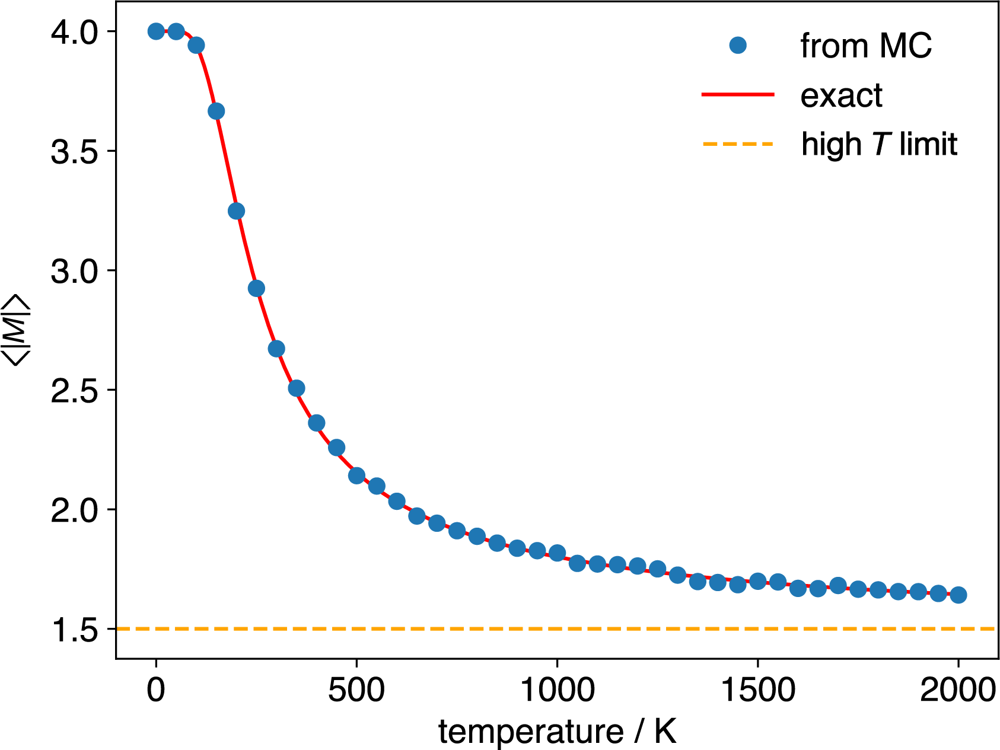
Figure 3.8: Average magnetisation magnitude, \(\langle |M| \rangle\), as a function of temperature, for a 4-spin Ising system with \(J=0.012\) eV, calculated using Metropolis Monte Carlo (circles) and by direct summation of the exact result (solid line). The horizontal dashed line shows the high-temperature limit result, \(\langle |M| \rangle=1.5\).
For this \(4\)-spin system we can check our simulation against the exact result because we can enumerate all \(16\) states. For larger systems this is not possible: a \(100\)-spin system has \(2^{100} \approx 1.27 \times 10^{30}\) states. But the Monte Carlo procedure remains exactly the same: select a spin, propose a flip, evaluate \(\Delta E\), apply the Metropolis criterion. The method samples the states with significant Boltzmann weights without enumerating them all.
3.7 Example: Butane Conformations
Moving from discrete to continuous configuration space, consider a chemical example: sampling the conformational preferences of butane (C₄H₁₀).
The energy of butane varies with rotation around its central carbon-carbon bond, characterised by the dihedral angle \(\phi\). As the molecule rotates through 360°, it passes through alternating eclipsed and staggered conformations every 60°. The four distinct conformations are shown in Figure 3.9:
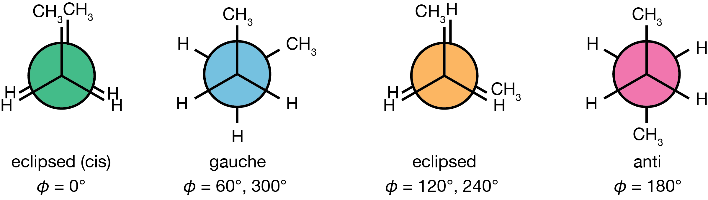
Figure 3.9: Newman projections of the four distinct butane conformations encountered during rotation around the central C–C bond. From left to right: eclipsed (cis) at \(\phi = 0°\) (green), eclipsed at \(\phi = 120°, 240°\) (orange), gauche at \(\phi = 60°, 300°\) (blue), and anti at \(\phi = 180°\) (pink).
The eclipsed (cis) conformation (\(\phi = 0°\)): The two methyl groups directly eclipse each other. This is the highest energy point on the potential energy surface, because of the severe steric repulsion between the two methyl groups.
Two equivalent gauche conformations (\(\phi = 60°\) and \(\phi = 300°\)): The methyl groups are staggered but separated by only 60°, introducing some steric strain. These local energy minima are thermally accessible at room temperature.
Two equivalent eclipsed conformations (\(\phi = 120°\) and \(\phi = 240°\)): A methyl group eclipses a hydrogen atom, creating an energy barrier between the anti and gauche minima.
The anti conformation (\(\phi = 180°\)): The two methyl groups are as far apart as possible, minimising steric interactions. This staggered conformation is the global energy minimum.
The potential energy as a function of the dihedral angle can be approximated by:
\[\begin{equation} U(\phi) = A_0 + A_1(1+\cos\phi) + A_2(1-\cos2\phi) + A_3(1+\cos3\phi) \tag{3.1} \end{equation}\]
where the coefficients \(A_i\) determine the relative energies of the different conformations. This functional form captures the threefold symmetry of the rotational potential—three maxima (eclipsed conformations) and three minima (staggered conformations)—with the barrier heights depending on which groups are eclipsing: the CH\(_3\)/CH\(_3\) eclipsed (cis) barrier at \(\phi = 0°\) is higher than the CH\(_3\)/H eclipsed barriers at \(\phi = 120°\) and \(240°\).
![Potential energy surface for butane's dihedral angle rotation, modelled using Equation \@ref(eq:butane-PES). Coloured circles mark the four distinct conformations shown in Figure \@ref(fig:butane-conformations): eclipsed (cis) at 0° (green), gauche at 60° and 300° (blue), eclipsed at 120° and 240° (orange), and anti at 180° (pink). Note the different barrier heights: the CH$_3$/CH$_3$ eclipsed barrier at 0° is approximately 35 kJ mol$^{-1}$, while the CH$_3$/H eclipsed barriers at 120° and 240° are approximately 27 kJ mol$^{-1}$.](lecture_03/figures/butane-PES.png)
Figure 3.10: Potential energy surface for butane’s dihedral angle rotation, modelled using Equation (3.1). Coloured circles mark the four distinct conformations shown in Figure 3.9: eclipsed (cis) at 0° (green), gauche at 60° and 300° (blue), eclipsed at 120° and 240° (orange), and anti at 180° (pink). Note the different barrier heights: the CH\(_3\)/CH\(_3\) eclipsed barrier at 0° is approximately 35 kJ mol\(^{-1}\), while the CH\(_3\)/H eclipsed barriers at 120° and 240° are approximately 27 kJ mol\(^{-1}\).
A Metropolis Monte Carlo simulation of butane’s conformational space proceeds as follows:
Begin with an initial dihedral angle, perhaps \(\phi = 180°\) (the anti conformation).
Propose a new dihedral angle by adding a small random perturbation: \(\phi' = \phi + \Delta\phi\), where \(\Delta\phi\) is chosen from a symmetric distribution. The size of \(\Delta\phi\) affects sampling efficiency—too small and the simulation explores conformational space slowly; too large and most moves are rejected due to the resulting high-energy configurations.
Calculate the energy change: \(\Delta U = U(\phi') - U(\phi)\).
Apply the Metropolis criterion to decide whether to accept the new angle:
- If \(\Delta U \leq 0\), accept the move.
- If \(\Delta U > 0\), accept with probability \(\exp(-\Delta U/k_\mathrm{B}T)\).
Record the current dihedral angle (either the new one if accepted, or the previous one if rejected).
Repeat steps 2-5 many times to generate a distribution of dihedral angles.
After sufficient sampling, the histogram of dihedral angles visited during the simulation reveals the conformational preferences of butane at the simulation temperature. Figure 3.11 shows results from a simulation at 500 K.
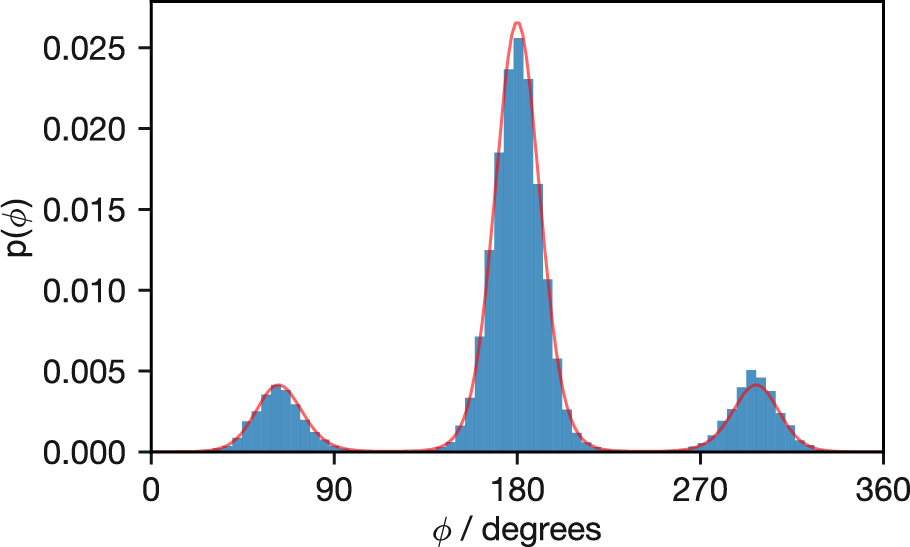
Figure 3.11: Probability distribution of butane’s dihedral angles at 500 K from Metropolis Monte Carlo sampling (histogram). The solid red line shows the exact Boltzmann distribution calculated analytically. Note the excellent agreement between simulation and theory, with the anti conformation (180°) being most populated, followed by the two gauche conformations at approximately 60° and 300°.
The agreement between the Monte Carlo histogram and the exact distribution (red line) confirms that our sampling correctly reproduces the Boltzmann distribution. The anti conformation (180°) is most populated, with the gauche conformations (around 60° and 300°) also showing significant occupancy.
3.8 Equilibration and Sampling
When beginning a Monte Carlo simulation, the initial configuration is often far from representative of typical equilibrium structures. To avoid biasing results, data from an initial “equilibration” or “burn-in” phase must be discarded before collecting statistics for analysis. Equilibration is the time required for the Markov chain to converge to its stationary distribution, at which point the simulation has effectively “forgotten” its initial configuration.
In practice, determining when equilibration has occurred requires monitoring the simulation:
- Energy monitoring: tracking the system’s energy. Initially, energy often drifts systematically before settling into stochastic fluctuations around a stable mean.
- Property stabilisation: monitoring running averages of key properties until they stabilise within statistical uncertainty.
- Multiple starting points: running several simulations from different initial configurations. If they converge to statistically equivalent results, equilibration is likely.
These indicators can be misleading: a simulation may appear fully equilibrated within a local region of configuration space while never visiting other important regions. We return to this problem below.
3.9 Temperature Effects and Sampling Challenges
Temperature appears directly in the Metropolis acceptance criterion, \(\text{acc}(i \to j) = \min(1, \exp(-(U_j-U_i)/k_\mathrm{B}T))\), and affects our simulations in two ways. First, it defines the Boltzmann distribution we aim to sample—at different temperatures, the same configurations have different equilibrium probabilities. Second, it influences how efficiently our simulation explores configuration space.
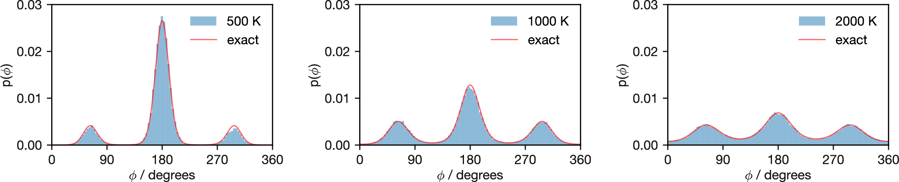
Figure 3.12: Probability distributions of butane’s dihedral angles at increasing temperatures (500 K, 1000 K, and 2000 K). Elevated temperatures progressively flatten the distribution, with barriers becoming less significant as temperature increases. At 2000 K, the distribution approaches uniformity, indicating that thermal energy has largely overcome the rotational barriers.
Figure 3.12 demonstrates how increasing temperature changes the distribution of butane dihedral angles. As temperature rises from 500 K through 1000 K to 2000 K, the probability landscape progressively flattens. This occurs because temperature rescales the potential energy surface: dividing all energy differences by \(k_\mathrm{B}T\) in the Boltzmann factor reduces the distinction between minima and barriers. By 2000 K, the distribution approaches uniformity and the Metropolis criterion accepts most proposed moves regardless of their energetic consequences.
3.9.1 Sampling Problems at Low Temperature
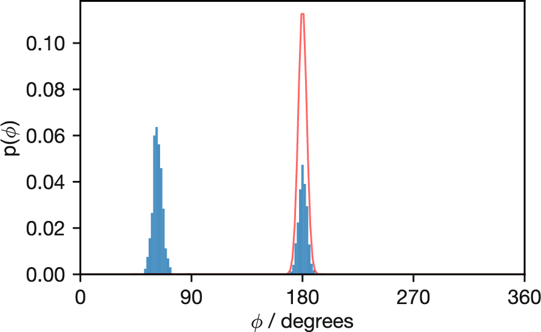
Figure 3.13: Probability distribution of butane’s dihedral angles from a simulation at 50 K (histogram) compared with the theoretical Boltzmann distribution (red line). The simulation, initialised at φ = 60°, fails to sample the global minimum at 180° adequately and completely misses the third minimum near 270°, illustrating how low temperatures can trap simulations in local regions of configuration space.
While the simulations at 500 K and above successfully sample the full range of dihedral angles and accurately reproduce the theoretical Boltzmann distribution, Figure 3.13 reveals a fundamental sampling problem at low temperature. This simulation at 50 K was initialised with \(\phi\) = 60°, and it remains trapped in the local minimum near this angle for much of the simulation time. Eventually, it transitions to the global minimum at 180°, but the relative populations between these two minima remain incorrect. The third minimum at approximately 270° is never visited during the simulation, though at this temperature even the exact distribution shows this conformation has very low probability.
This butane example at 50 K illustrates a general issue that affects Monte Carlo simulations of many chemical systems. When the available thermal energy (\(k_\mathrm{B}T\)) is small relative to the energy barriers separating different configurations, the Metropolis acceptance probability for barrier-crossing moves becomes vanishingly small. Consequently, the simulation may remain trapped in a subset of the full configuration space for the entire simulation duration.
3.10 The Ergodic Hypothesis
The butane example at 50 K points to a fundamental assumption underlying Monte Carlo simulations: the ergodic hypothesis. This hypothesis states that the time average of a property (calculated from a single system observed for a sufficiently long time) equals the ensemble average (calculated across many systems at one moment, each sampled according to the appropriate equilibrium distribution).
When we run a single Metropolis Monte Carlo trajectory and calculate averages from it, we are implicitly assuming that our simulation has adequately sampled the entire relevant configuration space according to the Boltzmann distribution. Only if this assumption holds can we expect our calculated properties to match the true equilibrium thermodynamic values.
For a Markov chain Monte Carlo simulation to be ergodic, it must satisfy two mathematical conditions:
- Irreducibility: The Markov chain must be able to reach any state from any other state through a sequence of allowed moves.
- Aperiodicity: The chain must not cycle deterministically through a fixed sequence of states. The Metropolis algorithm is automatically aperiodic because rejected moves create self-transitions—the system can remain in the same state for consecutive steps, which prevents any deterministic cycling.
In practice, irreducibility is the condition that requires careful attention. As the 50 K butane simulation demonstrates, this assumption can fail in practical applications. Despite the Metropolis algorithm’s mathematical guarantee of eventually sampling the correct Boltzmann distribution, the timescale required to adequately sample all relevant configurations might exceed any feasible simulation length. The 50 K simulation remains trapped in a subset of the configuration space, producing results that reflect only part of the full Boltzmann-weighted ensemble. In this case, the time average from our simulation does not equal the true ensemble average—the ergodic hypothesis breaks down.
While the Metropolis algorithm theoretically allows transitions between all possible states, in practice high energy barriers can create situations where certain regions of configuration space become effectively isolated from others. This is analogous to our UK height sampling example from Lecture 2—if our random walker begins in Edinburgh without efficient transportation, they might thoroughly explore the Scottish cities but never reach London or Cardiff during the course of our survey. The heights measured would accurately represent Scotland’s population, but fail to capture the demographics of the entire UK. Similarly, when energy barriers partition configuration space, the simulation results depend heavily on the initial configuration and fail to represent the complete equilibrium distribution. This practical limitation represents one of the most significant challenges in applying Monte Carlo methods to complex chemical systems.
3.11 Summary
In Lecture 2, we saw that a Markov chain’s transition probabilities define its stationary distribution. In this lecture, we tackled the inverse problem: given that we want the Boltzmann distribution as our stationary distribution, what transition probabilities should we use? Solving this directly would require enumerating all states and their energies—exactly the exhaustive calculation we want to avoid.
Detailed balance provides a tractable alternative. By requiring that probability flow balances for each pair of states independently, we only ever need the energy difference between two states at a time: \(P(i \to j)/P(j \to i) = \exp(-(U_j - U_i)/k_\mathrm{B}T)\). The Metropolis acceptance criterion satisfies this constraint: always accept moves that lower the energy; accept energy-raising moves with probability \(\exp(-\Delta U/k_\mathrm{B}T)\). No partition function is needed.
The method works with any energy function, applies to both discrete systems (Ising spins) and continuous ones (butane dihedral angles), and requires only local energy calculations. The main limitation is that at low temperatures, high energy barriers can trap the simulation in a subset of configuration space, violating the ergodic assumption that underlies the connection between time averages and ensemble averages.
Detailed balance is sufficient for global balance, but not necessary. There are Markov chains that satisfy global balance without satisfying detailed balance.↩︎